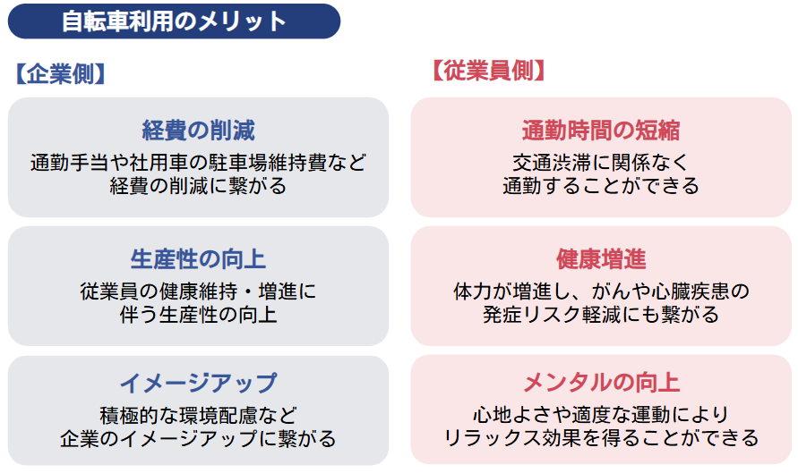
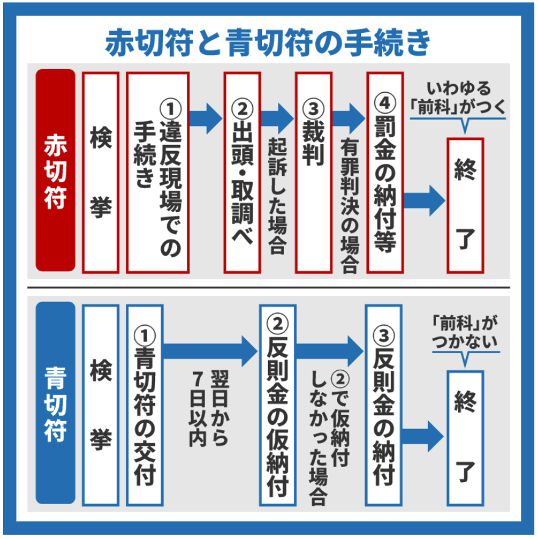
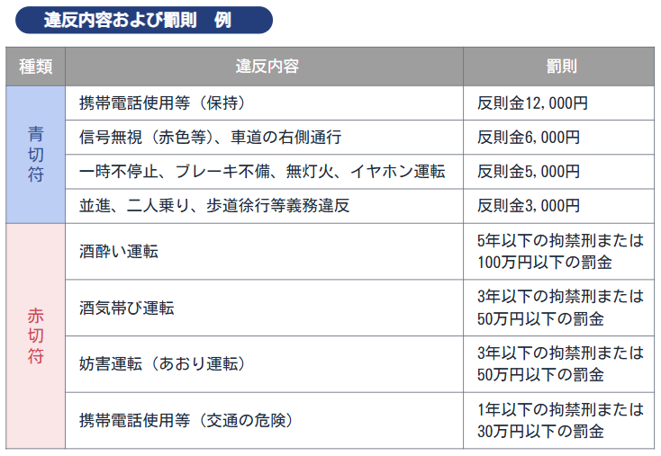
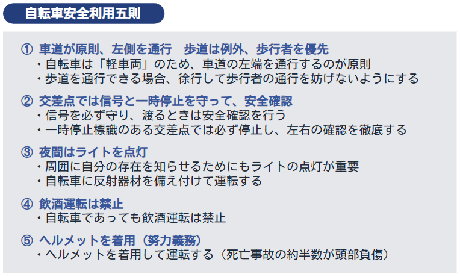
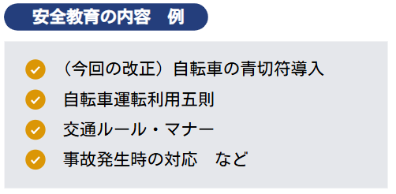
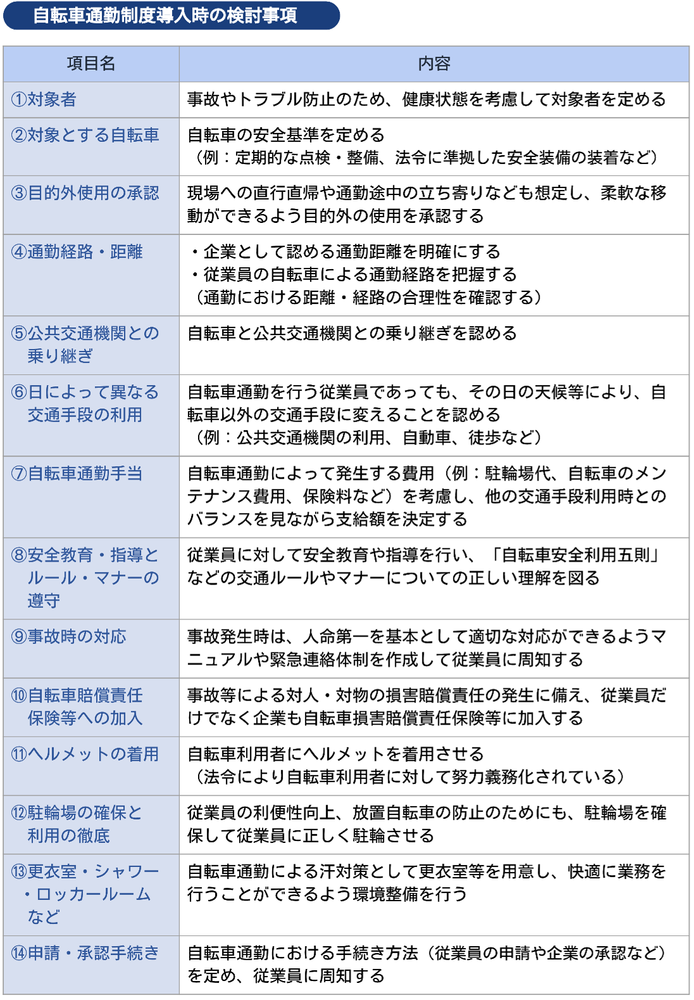
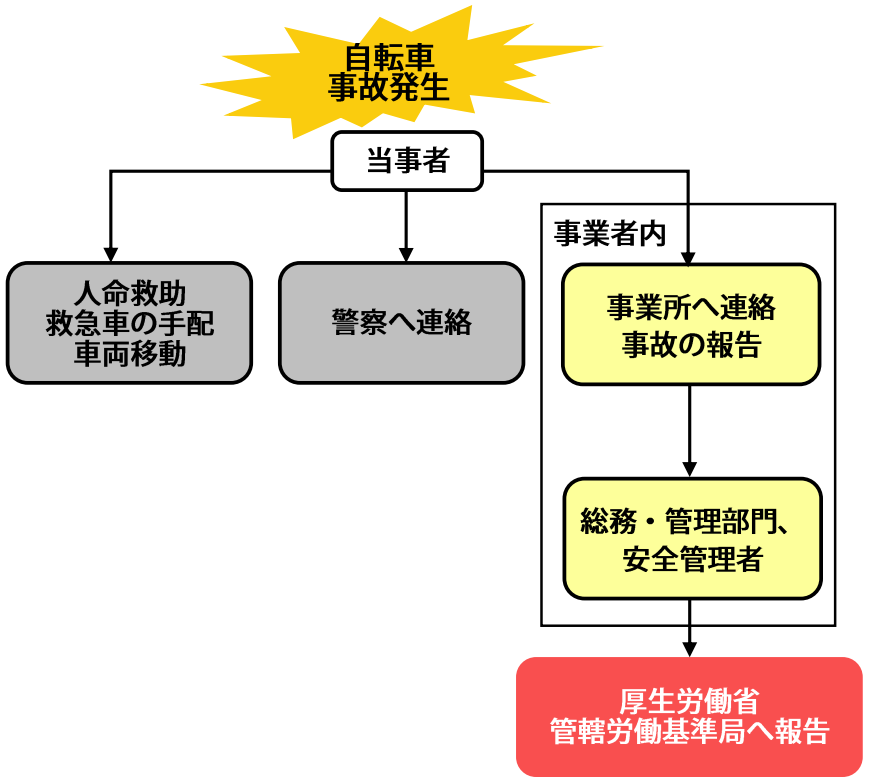
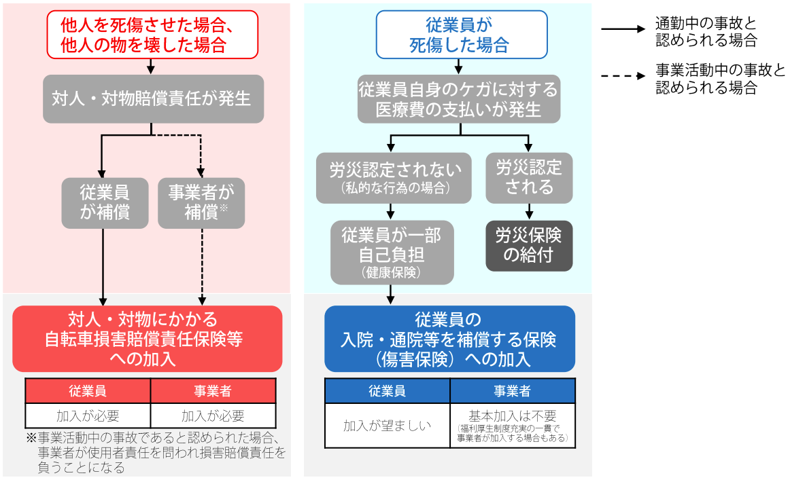
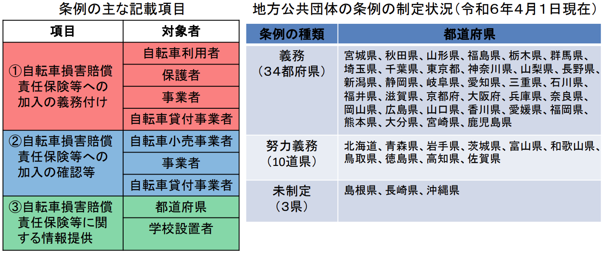

自転車の交通反則通告制度が2026年4月より施行。企業として今すぐ取り組むべき安全教育・社内規程整備・保険対策を解説します。従業員向け説明資料付き。
土橋社労士事務所 | SOCIAL INSURANCE & LABOR CONSULTANT
近年、健康増進や環境負荷の低減などを目的として、自転車を通勤や業務に活用する企業が増えています。しかし、その一方で自転車の運転者が加害者となる重大事故や交通違反が社会問題化しており、2026年4月から、道路交通法改正により自転車にも交通反則通告制度（いわゆる「青切符」）が適用されることとなりました。今回は青切符の仕組みと企業が取り組むべき安全教育・自転車通勤制度の整備ポイントを解説します。記事の最後には、従業員案内用の「自転車の交通ルールの変更」もご用意しています。
自転車の通勤・業務利用は、従業員の健康増進や経費削減など、多くのメリットがあります。一方で、法改正によって個人のマナーの問題では済まされないリスクも生じています。まずは、2026年4月に導入された「青切符」の仕組みと従業員の違反が企業にどのような影響を及ぼすのか、その全体像を整理します。
自転車の利用は、従業員にとって健康面や精神面での効果、通勤時間の短縮など、さまざまなメリットがあります。また、従業員の心身の健康が生産性の向上につながるなど、企業にも相乗効果をもたらせます。
自転車は環境負荷が低く、健康増進にも寄与するため、国も自転車通勤の普及を推進しています。

こうした中、2026年4月、改正道路交通法が施行されました。なかでも注目されているのは自転車への「交通反則通告制度」の適用です。

出典：政府広報オンライン『2026年4月から自転車の交通違反に「青切符」を導入！何が変わる？』（一部抜粋）
自転車の交通違反の検挙件数は年々増加しています。通勤中・業務中に従業員が自転車による交通違反や事故を起こした場合、企業としての安全管理責任や社会的信用が厳しく問われるリスクがあります。
自転車運転による交通違反を行った場合、以下のような罰則が科されます。

一定台数以上の自動車を使用する事業所では「安全運転管理者」の選任が必要ですが、自転車は選任基準に含まれません。しかし、企業には法令上「安全配慮義務」があり、従業員が安全に通勤・就業できる環境を整える責任があります。自動車と同様、自転車を利用する従業員に対しても安全教育を実施し、法令遵守の徹底や交通事故の防止に取り組むことが重要です。
従業員を交通違反や事故から守るためには、まず「何が違反になるのか」という正しい知識を周知することが不可欠です。ここでは、青切符の対象となる基本的な交通ルールと、社内で実施すべき安全教育の具体的な方法について解説します。
労務担当者は、従業員に対して安全に自転車を利用するよう注意喚起するためにも、自転車利用者が守るべき基本的な交通ルール「自転車安全利用五則」を正しく認識しておく必要があります。

従業員が交通ルールにしたがって安全に自転車を利用するためには、安全教育の実施が重要です。定期的に安全教育を実施することにより、従業員の交通安全に対する意識を高めることができます。

警察庁の自転車ポータルサイトでは、安全教育で活用できる交通安全の動画や教材が無料で公開されています。社内研修の教材としてご活用ください。
安全教育を徹底するのと並行して進めたいのが、社内ルールの明文化です。自転車通勤を個人だけの裁量に任せず、企業として適切に管理・サポートするための規程作成や見直しで押さえておくべき実務上のポイントを解説します。
従業員の自転車通勤を認める場合、社内ルールを定めることが重要です。自転車通勤制度を整備してルールを明確にすることで、従業員の自転車通勤の状況把握や適切な安全対策を講じることができます。以下の各項目を参考にして自社の状況にあった内容を検討します。すでに制度化している場合は、現状の課題を整理したうえで制度内容の見直しを行います。

自転車通勤制度について検討した後、決定した内容に基づき規程や申請書などを作成して従業員に周知します。
安全教育などの対策を十分に講じても、事故のリスクをゼロにすることは困難なため、事故発生時の体制を整備することが重要です。万が一の事態に直面したときに、従業員がパニックにならず動ける体制づくりと、企業の賠償リスクを最小限に抑えるための保険の備えについて解説します。
万が一事故が発生してしまった場合でも、慌てず対応できるように、企業はあらかじめ事故発生時の対応マニュアルや緊急連絡体制の整備を行い、事故発生時の対応フローを従業員に周知します。
事故を起こした従業員は、パニックになりがちです。そのため日頃から安全教育を行い、事故発生時に従業員が適切な対応を行えるよう対応フローを認識させることが重要です。

出典：自転車活用推進官民連絡協議会『自転車通勤導入に関する手引き』P26（一部抜粋）
自転車事故では、加害者に数千万円もの賠償命令が出るケースもあります。通勤時の事故の場合、事故を起こした従業員自身が対人・対物賠償責任を負います。しかし、その事故が業務中の事故と認定された場合は企業が使用者責任を問われ、損害賠償責任を負うこととなります。

出典：自転車活用推進官民連絡協議会『自転車通勤導入に関する手引き』P28（一部抜粋）
こうしたリスクを踏まえ、従業員だけでなく企業も自転車損害賠償責任保険等への加入について検討することをおすすめします。また、近年では条例により自転車損害賠償責任保険等への加入義務、または努力義務を定める自治体が増えています。

出典：国土交通省『自転車損害賠償責任保険等への加入促進』（一部抜粋）
2026年の法改正による「青切符」の導入は、単なる交通違反の手続き変更ではありません。社会全体が自転車を「より交通ルール遵守が求められる車両」として認識する時代になってきたといえます。企業にとっても、適切な対応は安全管理体制を強化する好機です。早期の対策を講じることが、従業員の命を守るとともに、企業の信頼向上と長期的な発展につながります。
通勤条件・申請手続き・禁止事項など社内ルールを明文化し、従業員に周知する
自転車安全利用五則を中心に、定期的な交通安全講習・資料配布を実施する
自治体条例の制定状況を確認し、従業員・企業ともに適切な保険加入を促進する
万が一の事故に備え、対応マニュアルと緊急連絡体制を整備して従業員に周知する
新たなルールを周知するときに活用できる、従業員向け資料「自転車の交通ルールの変更」をご用意しました。社内配布・掲示板への掲示などにご活用ください。